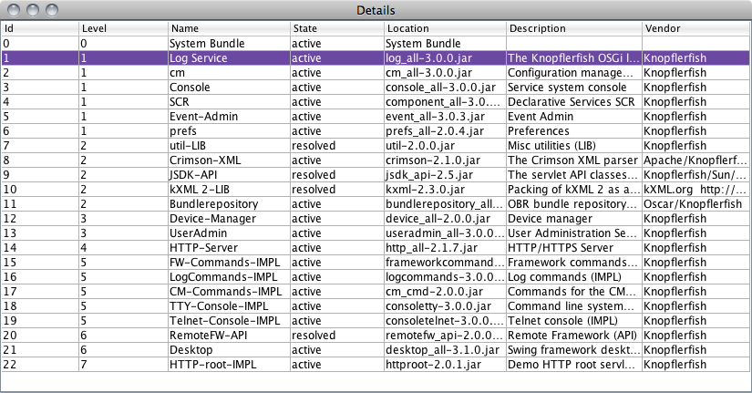

The Knopflerfish OSGi Desktop displays a graphical overview of the OSGi framework. Most common operations as install, start, stop and update can be performed on bundles using the desktop. Additionally, bundle and service detail information is shown, and an experimental "Save deploy archive" is included.
The desktop is a standard OSGi bundle, using Swing. The desktop is primarily designed to manage a locally running framework, but can be used to control a remote framework, using the optional SOAP bundles. Consult the description of how to activate the "Remote framework..." menu item.
Additionally, the HTTP console or the Telnet console bundle can always be used for remote control. Both are available in the KF bundle repository.
The desktop can be customized using plug-in services, see SwingBundleDisplayer for details.
When started, it creates a window with four main areas:
To view the installed bundles as icons, select
View -> Large Icons
| Bundle which has a BundleActivator | |
| Active bundle | |
| "Library" bundle which has no BundleActivator | |
| Fragment bundle. | |
|
A bundle may provide its own icon by listing it in the manifest attribute Bundle-Icon:. See the OSGi Core specification R4 v4.3 for details on this. Example of bundles providing their own icon are: "System Bundle", "Log Service", "cm" and "Console". |
Bundles can be selected by clicking.
To view the installed bundles as a detailed list, select
View -> Details
Bundles can be selected by clicking.
To view the installed bundles as graphics, select
View -> Graph
The top left corner shows the bundle id and name of the currently selected bundle.
The lower left corner shows a bundle selection history. Double-click on any of those bundles to re-select it.
The left hand side of the view shows package dependencies. Lines below the horizon are packages that the bundle imports and lines above the horizon are the packages that the bundle exports to another bundle. There is one export-line for each bundle that imports the package. Holding the mouse pointer over a package-line will pop-up a tool tip with the name and version of the package. Holding the mouse pointer over the end of a package line will pop-up a tool-tip showing the bundle that the package was imported from or exported to. Click on the end of a package line to select the bundle associated with it (that bundle will be highlighted every where it occurs in the graph), double-click to center the graph on the selected bundle. Above each export package line a mini-graph showing the exports of the bundle importing the package is drawn.
The right hand side of the view shows service dependencies. Lines below the horizon are services that the bundle uses (imports) and lines above the horizon are the services that the bundle provides (exports) to another bundle. There is one export-line for each bundle that uses a registered service. Holding the mouse pointer over a service-line will pop-up a tool tip with the service id and object-class of the service it represents. Holding the mouse pointer over the end of a service line will pop-up a tool-tip showing the bundle that the service was imported from or exported to. Click on the end of a service line to select the bundle associated with it (that bundle will be highlighted every where it occurs in the graph), double-click to center the graph on the selected bundle. Above each export service line is a mini-graph showing the services provided by the bundle using the service that the line represents.
The transparent blue half-circle below (or above) the selected bundle is a scroll-bar that scrolls the package/service lines. Drag the mouse horizontally, starting in side the half circle, to scroll.
| Name | Description | Value type | Default value |
|---|---|---|---|
| org.knopflerfish.bundle.log.window.impl.LogTableModel.capacity | The maximum number of log entries to keep in memory in one log view. Use a negative value (i.e., a value smaller than 1) to indicate that old entries shall never be removed. | int | 342 |
| org.knopflerfish.desktop.display.large_icons.sort |
The sort order to use for icons in the "Large Icons" bundle
displayer. Supported values are:
The desktop bundles stores the sort order amongst its preferences (for each framework service id), if this property is set it will over-ride the saved preferences value. |
String | id |
| org.knopflerfish.desktop.displays | A white-space separated list of built in desktop displays to instantiate on startup. Each item in the list is the full class name of a displayer. | String | org.knopflerfish.bundle.desktop.swing.LargeIconsDisplayer org.knopflerfish.bundle.desktop.swing.GraphDisplayer org.knopflerfish.bundle.desktop.swing.TableDisplayer org.knopflerfish.bundle.desktop.swing.ManifestHTMLDisplayer org.knopflerfish.bundle.desktop.swing.ClosureHTMLDisplayer org.knopflerfish.bundle.desktop.swing.ServiceHTMLDisplayer org.knopflerfish.bundle.desktop.swing.WiringHTMLDisplayer org.knopflerfish.bundle.desktop.swing.SCRHTMLDisplayer org.knopflerfish.bundle.desktop.swing.LogDisplayer org.knopflerfish.bundle.desktop.swing.EventDisplayer org.knopflerfish.bundle.desktop.swing.PrefsDisplayer |
| org.knopflerfish.desktop.displays.extra |
A white-space separated list of additional built in desktop
displays to instantiate on startup. Each item in the list is
the full class name of a displayer. Use this property when you
want to start all the default built in displayers and some
extra dislayer. This way you only need to specify the
additional displayer and not all of them.
E.g., org.knopflerfish.bundle.desktop.swing.PackageHTMLDisplayer org.knopflerfish.bundle.desktop.swing.SpinDisplayer |
String | |
| org.knopflerfish.desktop.display.main | The name of the default bundle displayer to show in the desktop's main frame when starting. | String | Large Icons |
| org.knopflerfish.bundle.desktop.event.EventTableModel.capacity | The maximum number of events to keep in memory in one event view. Use a negative value (i.e., a value smaller than 1) to indicate that old event shall never be removed. | int | 342 |
{kind=link}